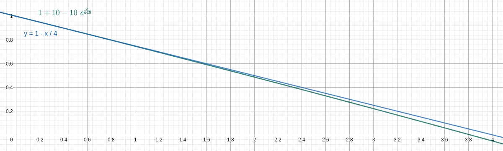
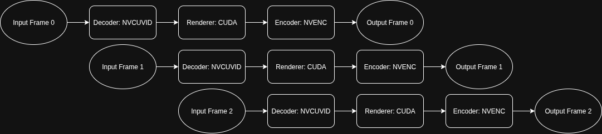
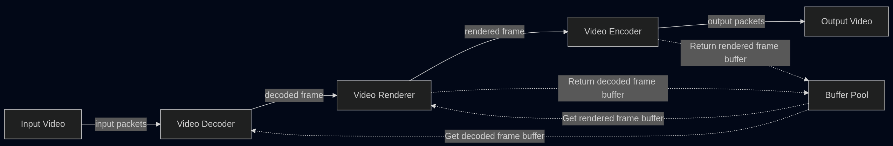

Team Members: Zijun Yang <zijuny@andrew.cmu.edu> and Jiache Zhang <jiachez@andrew.cmu.edu>
Project Home Page: /StarTrailCUDA/
NOTICE: Most videos on this page are in 4K. If you notice any aliasing, viewing it in full screen usually helps.
StarTrailCUDA is a GPU-accelerated system for generating night-sky star trail videos from real-time astronomical footage. We developed three rendering algorithms, with LINEARAPPROX approximating a sliding-window linear fade using only the previous frame, achieving a 7.4x speedup over the naive linear algorithm. We then built and optimized a fully pipelined CUDA implementation, adding hardware-accelerated video codecs, zero-copy memory transfers, and a buffer pool to eliminate per-frame allocations. Our final system achieves a 433x speedup over the CPU baseline, processing a 4K 15-second video in 2.6 seconds on an AWS EC2 g4dn.xlarge instance with an NVIDIA T4 GPU.
This section is broken down into four main components: a description of the system's input and output formats, an analysis of the key computational challenges, an examination of dependencies and parallelism within the workload, and a high-level overview of the developed algorithms and implementations.
Our source material is a high-quality all-night sky recording (non-time-lapse) from YouTube (video source: <https://www.youtube.com/watch?v=Bbp1-p2FoXU>). This video provides excellent clarity and resolution (3840×2160), making it ideal for rendering star trail videos. The original video is quite long and we pick the first 15s (30fps, 450 frames) as our test input video. The output of our system is a processed 4K 15s video with H.264 encoding that presents the star trail visual effect.
We considered alternative sources, particularly examining the database at <https://data.phys.ucalgary.ca/>, which contains comprehensive continuous nighttime recordings from observatories worldwide over recent years. While this database offers extensive and complete data, it presents a significant limitation: the cameras are primarily scientific instruments designed for research purposes rather than high-quality cinematography, resulting in insufficient clarity for star trail rendering. Therefore, we opted for clear videos recorded by amateur astronomy enthusiasts.
Theoretically, using video files versus collections of individual images as source media would yield equivalent results. However, storing media in image format requires prohibitively large storage space. Our test video, when stored as an MP4 file, occupies 101.77MB. When each frame of this video is saved in PNG format, the total storage requirement reaches 18GB; even with JPEG compression, it still requires 3.6GB. This storage demand is unacceptable for development and testing environments with limited storage capacity (for example, GHC servers impose a 2GB storage limit per user, insufficient for image-format media storage). Mounting remote storage would introduce additional I/O overhead.
Consequently, we decided to store and process source media in video format to minimize local storage requirements. Additionally, MP4-compressed video maintains sufficient quality without affecting final rendering results, eliminating the need for uncompressed video or image inputs.
The star trail rendering process involves three computationally intensive stages: decoding, rendering, and encoding. Decoding involves extracting raw video frames from compressed input formats. Rendering applies star trail algorithms to transform input frames into output frames with visual effects, requiring pixel-wise operations and potentially maintaining frame history. Encoding compresses the processed frames back into video format (H.264) for storage. Among these, the rendering stage is the most algorithmically expensive and benefits significantly from parallelization, while decoding and encoding also contribute substantial processing time, especially for high-res 4K video.
The processing pipeline exhibits several dependency patterns. The three main stages (decode → render → encode) form a sequential dependency chain where each stage depends on completion of the previous stage. Within the rendering stage, algorithm dependencies vary: some algorithms (like LINEAR) require access to multiple previous input frames, creating temporal dependencies, while others (like MAX) only need the previous output frame. At the pixel level, however, excellent parallelism exists: each output pixel can be computed independently from others within the same frame, providing substantial data-parallel opportunities. This pixel-level independence makes the rendering stage highly amenable to GPU acceleration.
We developed multiple rendering algorithms (MAX, LINEAR, and LINEARAPPROX) to generate star trail effects, each with distinct computational patterns and visual outcomes. To accelerate the processing, we explored several implementation strategies ranging from a CPU-based baseline to a fully pipelined GPU-accelerated system. The details of these algorithms and implementations are discussed in the Approaches and Results section.
We divide this section into two parts: Rendering Algorithms, where we describe and analyze the computational approaches for generating star trails, and Implementations, where we detail the architectural evolution and optimization of our processing pipeline from a CPU-bound baseline to a fully parallelized GPU-accelerated system.
Unless otherwise stated, results are from an AWS EC2 g4dn.xlarge instance (4 vCPUs, 16GB RAM, NVIDIA T4, gp2 storage with 100 IOPS, 128-250MB/s) running LINEARAPPROX algorithm with default parameters on the 15s 30fps 4K H.264 test input video.
The MAX algorithm creates star trails by maintaining a cumulative maximum frame that preserves the brightest pixel values encountered over time. At each frame, the algorithm performs an element-wise maximum operation between the current input frame and the accumulated maximum frame, ensuring that bright stars leave persistent trails while darker background regions remain unaffected.
Key implementation details:
Decay Factor: A small decay factor of 0.999 is applied to the accumulated frame before comparison, causing older trails to gradually fade and preventing infinite accumulation of brightness values
Pixel-wise Maximum: For each pixel position, the algorithm selects the maximum value between the decayed accumulated frame and the current frame: maxFrame = max(maxFrame × 0.999, currentFrame)
While this approach is conceptually simple and straightforward to implement, the practical results are suboptimal. The decay factor of 0.999 is insufficient to prevent excessive accumulation of brightness values over time. As the video progresses, bright points fade too slowly, causing an increasing number of luminous artifacts to persist in the frame. This leads to severe overexposure and blurring effects, where the accumulated trails become overly bright and lose definition. The resulting star trail video appears washed out with poor contrast and indistinct trail boundaries, making it difficult to discern individual star trajectories. Although the MAX algorithm successfully demonstrates the basic concept of trail preservation, its aggressive retention of bright pixels without adequate decay control produces unsatisfactory visual quality.
The LINEAR algorithm produces the highest quality star trail effects among all tested approaches by implementing a sophisticated sliding window technique with linear weight decay. This method maintains a fixed-size window of recent frames and applies linearly decreasing weights to create natural-looking trail fade effects. It also gives us control over the length of the tail compared with exponential fading algorithms.
Key implementation details:
Sliding Window: Maintains a deque of the most recent W frames (where W is the window size), automatically removing the oldest frame when the window is full
Linear Weight Decay: Applies weights ranging from 1.0 (most recent frame) to 1/W (oldest frame in window), creating a smooth linear fade: weight = (W - i) / W
Pixel-wise Maximum: For each frame position, performs element-wise maximum operation between the weighted frame and the accumulated result: accFrame = max(accFrame, weightedFrame)
This approach produces visually superior results with well-defined star trajectories, appropriate trail lengths, and natural fade characteristics. The linear weighting ensures that recent star positions are prominent while older positions gradually diminish, creating realistic motion blur effects that closely resemble long-exposure photography techniques.
However, the algorithm's computational complexity is significantly higher due to the need to maintain and process the entire sliding window for each output frame. In our serial implementation, the LINEAR algorithm requires approximately 1125 seconds to complete rendering, making it impractical for real-time or near-real-time applications. The performance bottleneck stems from the intensive memory operations and repeated maximum computations across the sliding window, highlighting the critical need for parallel optimization techniques.
In the LINEAR algorithm, it is very expensive both in memory and computation to trace back
To solve this issue, we leverage the fact that the exponential function has a derivative of 1 near
, where
Here's a comparison between the ground truth (the blue line) and our heuristic (the green line) under

With this heuristic, the new output frame can be approximated using only the last output frame and the new input frame using this formula in
The LINEARAPPROX algorithm looks very similar to the LINEAR algorithm in controlling the tail length and window size except for being slightly darker. We suspect the difference mainly comes from floating point precision and rounding errors. Also, both of us think it actually looks better than the LINEAR algorithm because it emphasizes bright stars and suppresses the darker ones, creating a cleaner video.
In the baseline implementation, we compared the performance difference for the LINEAR algorithm and the LINEARAPPROX algorithm under default parameters given the test input (
The baseline implementation serves as our reference CPU-based serial processing pipeline, built entirely around the OpenCV library for comprehensive video processing operations. This implementation provides a clean, modular architecture that handles video input, frame-by-frame rendering computations, and video output encoding in a sequential manner.
Architecture Overview:
Frame Reader Module: Implements a FrameReader class hierarchy that abstracts video input sources, supporting both video files and image folder sequences. The module handles frame extraction, format conversion, and provides a unified interface for accessing sequential video frames regardless of the input format.
Video Renderer: Contains the core rendering logic with support for multiple star trail algorithms (MAX, LINEAR, LINEARAPPROX, etc.). The renderer processes frames sequentially on the CPU, applying the selected algorithm to generate star trail effects through pixel-wise operations and accumulation techniques.
The baseline serves as both a correctness reference and a performance benchmark against which optimized implementations are measured. While this approach ensures maximum compatibility across different hardware configurations, it suffers from multiple performance bottlenecks. Beyond the purely serial nature of the rendering computations, the OpenCV-based software video decoding and encoding operations themselves become major time bottlenecks. In certain rendering algorithms, the combined decode and encode time can match or even exceed the algorithm computation time, making video I/O processing as critical a performance constraint as the rendering logic itself. For high-resolution 4K video inputs, these compounded inefficiencies result in total processing times extending to several hundred seconds.
Performance Results:
Average time: 152.33s
Timing Breakdown from a Typical Run:
| Stage | Time (ms) | Percentage |
|---|---|---|
| Decode | 4,531.59 | 3.0% |
| Render | 112,786 | 73.7% |
| Encode | 35,687.5 | 23.3% |
| Total | 153,005 | 100% |
Comparing to LINEAR algorith, LINEARAPPROX has a speed up of approximatly 7.4x. As shown in the timing result above, the encode stage in the baseline consumes a non-negligible fraction of total runtime and therefore represents a clear optimization opportunity.
Given that it takes a long time to encode output frames to output videos as seen in the baseline, and that we plan to use NVIDIA GPU, we leverage NVIDIA's codec library to decode and encode videos using hardware acceleration.
Performance Results:
Average time: 133.07s
Timing Breakdown from a Typical Run:
| Stage | Time (ms) | Percentage |
|---|---|---|
| Decode | 13,023.2 | 9.8% |
| Render | 111,430 | 84.4% |
| Encode | 7,673.19 | 5.8% |
| Total | 132,127 | 100% |
The implementation shows significant improvement in encoding time compared to the baseline (reduced from 35.7s to 7.7s), demonstrating the efficiency of hardware-accelerated video processing.
The speedup so far is 8.5x
It is pretty clear that the bottleneck now is the rendering time.
This implementation replaces the sequential CPU-based rendering computations with GPU-accelerated CUDA kernels that execute pixel-wise operations in parallel, dramatically reducing the rendering computation time.
Performance Results:
Average time: 40.94s
Timing Breakdown from a Typical Run:
| Stage | Time (ms) | Percentage |
|---|---|---|
| Decode | 19,553.5 | 39.1% |
| Render | 12,100.1 | 24.2% |
| Encode | 18,316.9 | 36.7% |
| Total | 49,970.4 | 100% |
The CUDA implementation dramatically improves rendering time with a 9.2x speedup (from 111.4s to 12.1s). The total speedup compared to the original baseline reaches 27.4x.
In the CUDA approach, the video data flows through three conceptual stages:
Decode: The process begins with compressed video packets. These packets are decoded to produce raw video frames. Each packet contains encoded information for a segment of the video, and decoding transforms this data into a usable frame format.
Render: The raw frames are then processed to generate output frames with the desired star trail effects. Each input frame is transformed into an output frame, where the visual effect is applied.
Encode: Finally, the processed output frames are re-encoded into compressed video packets.
Each stage utilizes a different part of the GPU: decoding uses the video decoding circuit, rendering uses CUDA cores, and encoding uses the video encoding circuit. In the basic CUDA approach, while one stage is active, the other hardware components remain idle.
This underutilization motivates the use of a pipeline, where decoding, rendering, and encoding are performed concurrently. By overlapping these stages, the pipeline keeps all GPU components busy, significantly improving overall throughput and reducing idle time for each hardware unit. In a pipelined approach, while frame N is being decoded, frame N+1 can be rendered, and frame N+2 can be encoded, all at the same time.

Given that the decode stage is the most time-consuming stage in the CUDA implementation, costing 19553ms, a naive three-stage pipeline would be limited by this duration. However, we decompose the workflow into five distinct concurrency units, which allows further parallelization and avoids being limited by the giant decode stage:
Packet Reader: Reads compressed video packets (H.264/HEVC/VP9/AV1) from disk to host memory
Hardware Decoder: Transforms compressed packets from host memory to NV12 format on GPU
Renderer: Applies star trail effects using CUDA kernels on GPU (maintains NV12 format)
Encoder: Compresses rendered NV12 frames on GPU to H.264 packets
File Writer: Writes compressed H.264 packets from host memory to output video file on disk
Stages are connected by thread-safe queues that enable asynchronous communication between pipeline components, decoupling processing rates and maintaining data flow.
The following pipeline table illustrates how frames progress through different stages over time, showing the overlapping nature of the 5-stage pipeline:
| 1 | 2 | 3 | 4 | 5 | 6 | 7 | 8 | 9 | |
|---|---|---|---|---|---|---|---|---|---|
| Frame 1 | PR | DE | RE | EN | WR | ||||
| Frame 2 | PR | DE | RE | EN | WR | ||||
| Frame 3 | PR | DE | RE | EN | WR | ||||
| Frame 4 | PR | DE | RE | EN | WR | ||||
| Frame 5 | PR | DE | RE | EN | WR |
Where: PR=Packet Reader, DE=Hardware Decoder, RE=Renderer, EN=Encoder, WR=File Writer
Additionally, the CUDA implementation originally used RGB format for frames, requiring transfers between CPU and GPU for format conversion. This caused NV12→RGB→NV12 conversions (CPU→GPU→CPU→GPU) that wasted significant time and bandwidth. To optimize this, we modified the renderer to process NV12 frames directly, keeping frames in GPU memory from decode to encode without unnecessary transfers.
This results in a massive performance improvement with a runtime of 4.6s, which is a ~250x speedup compared to the baseline implementation.
Detailed Timing Breakdown:
| Operation | Time per frame (us) |
|---|---|
| Decoder | |
| Packet read | 213 |
| Decode | 548 |
| GPU transfer | 1585 |
| Output queue push | 8557 |
| Renderer | |
| Input queue pop | 2 |
| Render | 1227 |
| Output queue push | 2 |
| Encoder | |
| Input queue pop | 368 |
| GPU transfer | 444 |
| Encoding | 90 |
| Packet queue push | 4 |
| Write | 106 |
Total frames: 444
However, we found the result to be confusing:
From the renderer's 2us pop and 2us push on input and output queue, we were sure that the renderer should be the bottleneck. This meant that the decoder was waiting for the renderer to take the next frame and the encoder was waiting for the renderer to give the next frame, so there was little time the renderer spent on waiting. However, other stages took way more time than the 1227us the renderer takes per frame and 1227us x 444 frames does not equal 4.6 seconds.
Examining our code, we found that we only included the computational time in the rendering phase, and not all the other construction and destruction steps which include malloc and free.
We added logs on those items as well and the result was as follows:
Detailed Timing Breakdown with Memory Operations:
| Operation | Time per frame (us) |
|---|---|
| Decoder | |
| Read | 98 |
| Decode | 637 |
| Memory alloc | 1363 |
| GPU transfer | 544 |
| Output queue push | 8090 |
| Renderer | |
| Input queue pop | 3 |
| Memory alloc | 0 |
| Render | 1291 |
| Memory free | 8547 |
| Output queue push | 3 |
| Encoder | |
| Input queue pop | 451 |
| Frame alloc | 2 |
| GPU transfer | 406 |
| Encoding | 128 |
| Packet queue push | 4 |
| Memory free | 9343 |
| Write | 130 |
This clearly indicates that the bottleneck for the CUDA pipeline implementation is indeed the renderer and the key issue was the excessive number of memory operations.
To fix the memory issue in the CUDA pipeline implementation, we use as little copy as possible and also a buffer pool to reuse frame buffers. A chunk of memory is popped from the buffer pool for receiving the result of the decoder, processed by the renderer and sent to the encoder to perform the output and eventually recycled to the buffer pool. This keeps all cudaFree and cudaMalloc in the initialization and shutdown phase, and zero memory allocation operations in the process. It also reduces the number of memory copies significantly.

The performance is stunning: It only takes 2.6s to complete rendering the test video, which is a 433x speedup compared with the baseline.
Detailed Timing Breakdown:
| Operation | Time per frame (µs) |
|---|---|
| Decoder | |
| Packet read | 84 |
| Decode | 5596 |
| Buffer acquire | 0 |
| GPU copy | 538 |
| Output queue push | 5 |
| Renderer | |
| Input queue pop | 5543 |
| Buffer acquire | 0 |
| Render | 1003 |
| Buffer release | 0 |
| Output queue push | 0 |
| Encoder | |
| Input queue pop | 0 |
| Frame alloc | 0 |
| GPU transfer | 440 |
| Encoding | 5367 |
| Packet queue push | 4 |
| Buffer release | 0 |
| Write | 120 |
Total frames processed: 444
As you can see from the breakdown table, the renderer runs blazing fast now, and the bottleneck is the decoder.
If we calculate the decode time 5596µs/frame x 444 frames, we will get around 2.6s, which further confirms it is the bottleneck. This is an atomic operation with the codec library provided by FFmpeg, so 2.6s is the theoretical best performance we can achieve with FFmpeg.
However, it is possible to improve beyond this point by using NVIDIA Video Codec SDK which provides more fine-grained control and more parallelism and pipeline opportunity to further break this atomic operation into steps and run them in parallel.
With that said, we don't have much time left, and we're generally pretty happy about the result. If we recall Amdahl's law, there are some much more time-consuming, sequential parts in this star trail pipeline that are at higher priority to be optimized at this point, like downloading input videos, adding music to the trail, or even coming up with a good name for the output file or a good Instagram post caption :)
The StarTrailCUDA project demonstrates that performance optimization requires a multi-faceted approach beyond low-level code tuning. Our experience reveals four critical insights for GPU-accelerated video processing.
First, algorithmic innovation through mathematics and heuristics delivers substantial gains independent of hardware improvements. The LINEARAPPROX algorithm exemplifies this by approximating linear decay with an exponential function, reducing computational complexity dramatically compared to the exact LINEAR algorithm without any GPU acceleration. This mathematical reformulation proved more impactful than many implementation-level optimizations, underscoring that exploring theoretical alternatives yields returns that brute-force engineering cannot match.
Second, leveraging specialized hardware capabilities is essential for holistic system performance. Our baseline with hardware codecs significantly improved encoding performance by utilizing the GPU's dedicated video encoding circuits. This transformation shifted the bottleneck to rendering and revealed that ignoring any hardware component leaves significant performance untapped.
Third, pipelining dramatically increases hardware utilization when distinct processing stages target different execution units. Our five-stage pipeline overlaps operations that would otherwise idle sequentially. While the naive CUDA implementation kept the video decoder, CUDA cores, and video encoder idle most of the time, pipelining enabled concurrent execution across these units, substantially reducing total runtime. The key insight is identifying natural stage boundaries where hardware resources do not conflict.
Finally, GPU memory operations are disproportionately expensive and require explicit management. Initial pipeline measurements showed confusing results, as rendering appeared fast yet total runtime far exceeded expectations. Detailed inspection logs revealed that per-frame memory allocation and deallocation operations dominated the pipeline. Implementing a buffer pool eliminated these allocations entirely, cutting runtime nearly in half. This optimization would have been impossible without granular timing instrumentation, confirming that profiling must account for all operations, not just kernel execution.
These lessons collectively enabled massive performance gains, demonstrating that peak performance emerges from the intersection of mathematical insight, hardware awareness, architectural parallelism, and meticulous memory management.
| Task | Assigned To |
|---|---|
| Exploring rendering algorithms | |
| MAX | Jiache Zhang |
| AVERAGE | Jiache Zhang |
| EXPONENTIAL | Jiache Zhang |
| LINEAR | Jiache Zhang |
| LINEARAPPROX | Zijun Yang |
| Implementations | |
| Baseline | Jiache Zhang |
| Baseline with hardware codec | Jiache Zhang, Zijun Yang |
| CUDA | Zijun Yang |
| CUDA + pipeline | Zijun Yang |
| CUDA + pipeline + zero copy + buffer pool | Zijun Yang, Jiache Zhang |
| Brainstorming, testing and documenting | Zijun Yang, Jiache Zhang |
Credit should be distributed 50-50.